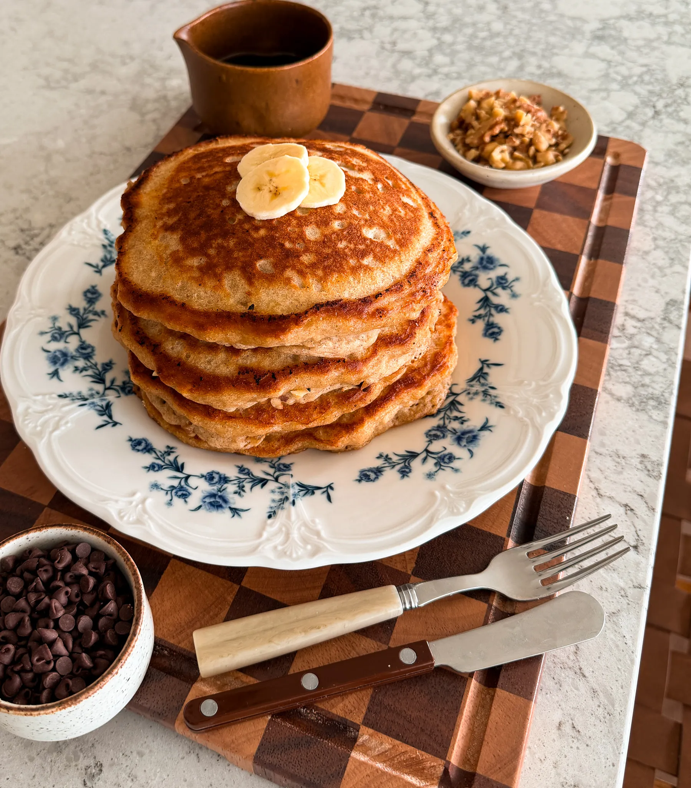

Home
My Favorite Recipes
Lazy Cake – Chocolate Salami

PREP TIME: 15 MINUTES
COOK TIME: 10 MINUTES
YIELDS: 10 TO 12 SLICES
INGREDIENTS
-
7 ounces condensed milk
-
1/3 cup unsalted butter, cubed
-
1/4 cup cocoa powder
-
3/4 cup heavy cream
-
1/2 cup chopped semi-sweet chocolate
-
1/4 teaspoon salt
-
1 teaspoon vanilla extract
-
8 ounces chopped tea biscuits
-
1/2 cup chopped walnuts
INSTRUCTIONS
-
To a saucepan over medium heat, add the condensed milk, butter,
cocoa powder, and heavy cream. Cook, stirring constantly, until
the butter is melted and the mixture is smooth and glossy.
-
Lower the heat and stir in the chopped chocolate, vanilla
extract, and salt until fully melted and combined. Remove from
the heat.
-
In a large bowl, add in the chopped tea biscuits and walnuts,
pour the chocolate mix over, and use a rubber spatula to fold
gently until everything is evenly coated.
-
Divide the mixture evenly between two pieces of plastic wrap.
Shape each portion into a log, then roll tightly to seal.
-
Refrigerate until firm, at least 2 hours. Unwrap, dust the logs
generously with powdered sugar, then slice and serve.
Banana Bread Pancakes

PREP TIME: 15 MINUTES
COOK TIME: 10 MINUTES
YIELDS: 10 TO 12 SLICES
INGREDIENTS
-
1 1/4 cup all-purpose flour
-
3 tablespoons brown sugar
-
2 teaspoons baking powder
-
1/2 teaspoon baking soda
-
1 teaspoon cinnamo
-
1/4 teaspoon salt
-
1 large egg
-
2 ripe bananas, mashed
-
1/2 cup chopped walnuts
FOR SERVING
INSTRUCTIONS
-
In a large bowl, mash the ripe bananas until mostly smooth
with a few small chunks left.
-
Whisk in the egg, melted butter, vanilla extract, and
buttermilk until combined.
-
In a separate bowl, whisk together the flour, brown sugar,
baking powder, baking soda, cinnamon, and salt.
-
Pour the wet ingredients into the dry and use a rubber spatula
to gently fold until just combined. Don’t overmix — a few lumps
in the batter are perfect.
-
Heat a nonstick pan or griddle over medium heat and add about
1/2 tablespoon of butter to melt
-
coop about 1/2 cup of batter for each pancake, or more
depending on how big or small you like them. Once the batter
hits the pan, sprinkle a few walnuts and mini chocolate chips
right on top before flipping.
-
Cook until bubbles form on top and edges look set, then flip
and cook the other side until golden brown
-
Transfer to a plate and keep warm, then repeat with the
remaining batter, adding more butter to the pan as needed
Top page
French-Style Hot Chocolate

PREP TIME: 15 MINUTES
COOK TIME: 10 MINUTES
YIELDS: 10 TO 12 SLICES
INGREDIENTS
HOT CHOCOLATE
-
2 1/3 cups whole milk
-
2/3 cup heavy cream
-
3 tablespoons brown sugar
-
10 ounces semi-sweet chocolate, finely chopped
-
1 teaspoon vanilla extract
-
1/4 teaspoon salt
WHIPPED CREAM
-
1/2 cup heavy cream
-
2 tablespoons powdered sugar
-
1/2 teaspoon vanilla extract
INSTRUCTIONS
MAKE THE HOT CHOCOLATE
-
In a saucepan over medium heat, add the milk, heavy cream, and
brown sugar. Heat gently, stirring occasionally, until steaming
but not boiling.
-
Add the chopped chocolate and pinch of salt. Whisk continuously
until the chocolate is fully melted and the mixture is smooth
and slightly thickened.
-
Remove from heat and stir in the vanilla extract.
-
Pour into mugs and top with whipped cream before serving.
WHIPPED CREAM
-
Add the heavy cream, powdered sugar, and vanilla extract to a
large bowl or stand mixer fitted with the whisk attachment.
-
Whip on medium speed until the mixture thickens and soft,
billowy peaks form..
-
Stop mixing as soon as the whipped cream looks smooth and
fluffy—overmixing will make it grainy and less smooth
Top page